Complexe résidentiel
Ossatures en béton armé de deux immeubles d'habitation mitoyens, l'un en R+4, l'autre en R+5 avec mezzanine, chacun sur sous‑sol.

Études de structures en béton armé et en charpente métallique : conception, dimensionnement et plans d'exécution, menés sur la maquette BIM.
Ossatures en béton armé de deux immeubles d'habitation mitoyens, l'un en R+4, l'autre en R+5 avec mezzanine, chacun sur sous‑sol.
Charpente métallique d'un hangar de vingt mètres de portée sur une quarantaine de mètres de long, à sept mètres au faîtage : portiques, contreventements et assemblages boulonnés, jusqu'aux pieds de poteaux.
Ossature en béton armé d'un bâtiment public de près de cinquante mètres de long, en R+2.
Ossature en béton armé d'une mosquée sur trois niveaux, dont un sous‑sol, couronnée d'une coupole, et d'un minaret culminant à près de vingt mètres.
La maquette et la note de calcul procèdent des mêmes données. Cette base commune écarte le décalage entre le modèle, le calcul et le plan transmis au chantier.
Chaque vérification porte la référence de l'article qui la fonde. Une note de calcul doit pouvoir être relue et contestée article par article.
Contrainte de sol, classe de béton, enrobage, catégorie sismique : les hypothèses figurent en tête de note.
Versions datées, hypothèses conservées, feuilles de calcul lisibles. Un calcul que l'on ne peut pas reprendre six mois plus tard n'a aucune valeur.
Bâtiments d'habitation et immeubles de bureaux, équipements publics et lieux de culte, ouvrages enterrés et réservoirs. Du sous-sol à la terrasse, fondations comprises.
Halls industriels, hangars et couvertures de grande portée, ainsi que les ouvrages mixtes associant une ossature métallique à une structure en béton.